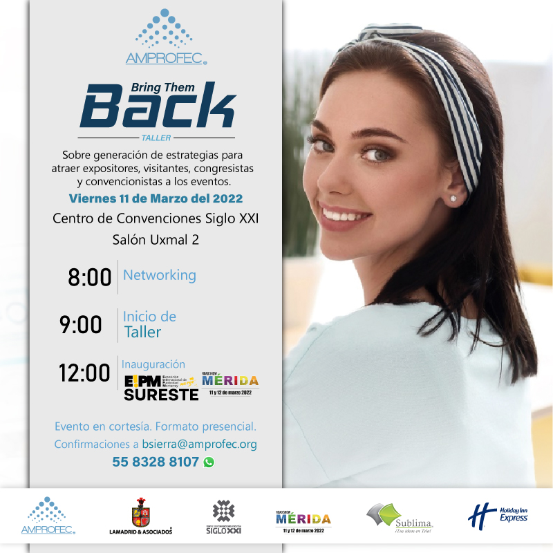

Portafolio

Banner promocional para el evento Global Exhibitions Day.
Banner para Reencuentro de Regiones Centro, se realizó para la página web de AMPROFEC.
Diseño para plataforma wiinik por parte de AMPROFEC, este se desarrolló para el impulso de la plataforma mobile.

Rediseño de post para redes sociales, el diseño se realizó para exhibir el taller Bring Them Back

Post para redes sociales de EXPOGRÁFICA, el diseño fue realizado para invitar al evento.
Diseño para Plastics Recycling Latam, invitación para evento.

Rediseño para tarjeta de presentación institucional.

Presentación de afiliación institucional AMPROFEC.

Banner para organigrama institucional.
X